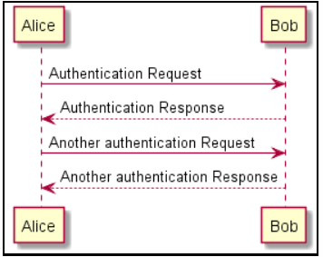
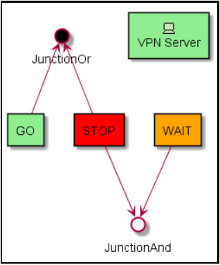
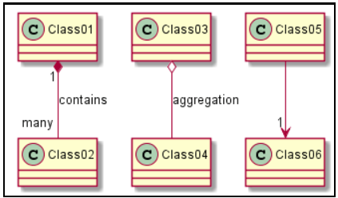
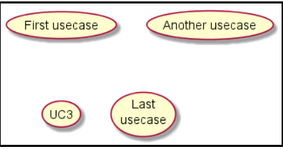

Activity Diagram
Activity Diagram is a behavioral diagram (which specifies software behavior),
and through it we can model parts of software behavior.
The activity diagram graphically illustrates how the software will work
(at the micro or macro level), how it will perform some of its parts,
how the system will act in the business reality in which it is inserted.
@startuml
start if (Graphviz installed?) then (yes) :process all\ndiagrams; else (no) :process only __sequence__ and __activity__ diagrams; endif stop
@enduml
start if (Graphviz installed?) then (yes) :process all\ndiagrams; else (no) :process only __sequence__ and __activity__ diagrams; endif stop
@enduml

Sequence Diagram
Sequence Diagram a diagram used in UML,
representing the sequence of processes
(more specifically, messages passed between objects)
in a computer program. Because a project can have a large
number of methods in different classes, it can be difficult to determine
the overall sequence of behavior. The sequence diagram represents this information in a simple and logical way.
@startuml
Alice -> Bob: Authentication Request Bob --> Alice: Authentication Response Alice -> Bob: Another authentication Request Alice <-- Bob: Another authentication Response
@enduml

Alice -> Bob: Authentication Request Bob --> Alice: Authentication Response Alice -> Bob: Another authentication Request Alice <-- Bob: Another authentication Response
@enduml
Archimate Diagram
ArchiMate Diagram offers a visual language to model and capture enterprise architecture.
It provides a means to visualize relationships within and between different domains.
These domains primarily include products/services, processes, organization,
data applications and technical infrastructure.
@startuml
!define Junction_Or circle #black !define Junction_And circle #whitesmoke Junction_And JunctionAnd Junction_Or JunctionOr archimate #Technology "VPN Server" as vpnServerA technology-device rectangle GO #lightgreen rectangle STOP #red rectangle WAIT #orange GO -up-> JunctionOr STOP -up-> JunctionOr STOP -down-> JunctionAnd WAIT -down-> JunctionAnd
@enduml

!define Junction_Or circle #black !define Junction_And circle #whitesmoke Junction_And JunctionAnd Junction_Or JunctionOr archimate #Technology "VPN Server" as vpnServerA technology-device rectangle GO #lightgreen rectangle STOP #red rectangle WAIT #orange GO -up-> JunctionOr STOP -up-> JunctionOr STOP -down-> JunctionAnd WAIT -down-> JunctionAnd
@enduml
Class Diagram
Class diagram is a static representation used in the programming
area to describe the structure of a system, presenting its classes,
attributes, operations and relationships between objects.
@startuml
Class01 "1" *-- "many" Class02 : contains Class03 o-- Class04 : aggregation Class05 --> "1" Class06
@enduml

Class01 "1" *-- "many" Class02 : contains Class03 o-- Class04 : aggregation Class05 --> "1" Class06
@enduml
Use case Diagram
A use case is a methodology used in system analysis to identify,
clarify, and organize system requirements. In this context,
the term "system" refers to something being developed or operated,
such as a mail-order product sales and service Web site.
Use case diagrams are employed in UML (Unified Modeling Language),
a standard notation for the modeling of real-world objects and systems.
@startuml
(First usecase) (Another usecase) as (UC2) usecase UC3 usecase (Last\nusecase) as UC4
@enduml

(First usecase) (Another usecase) as (UC2) usecase UC3 usecase (Last\nusecase) as UC4
@enduml